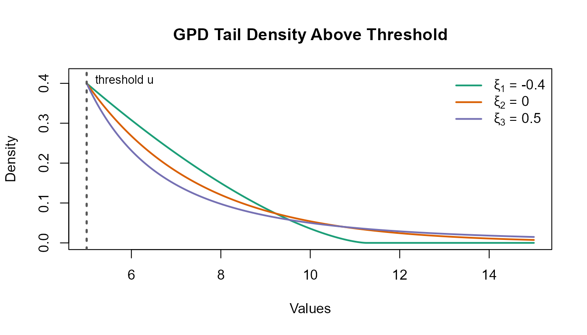
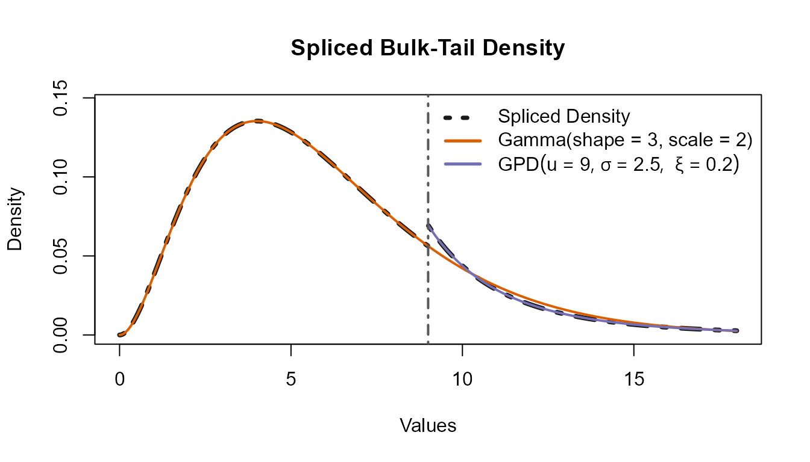
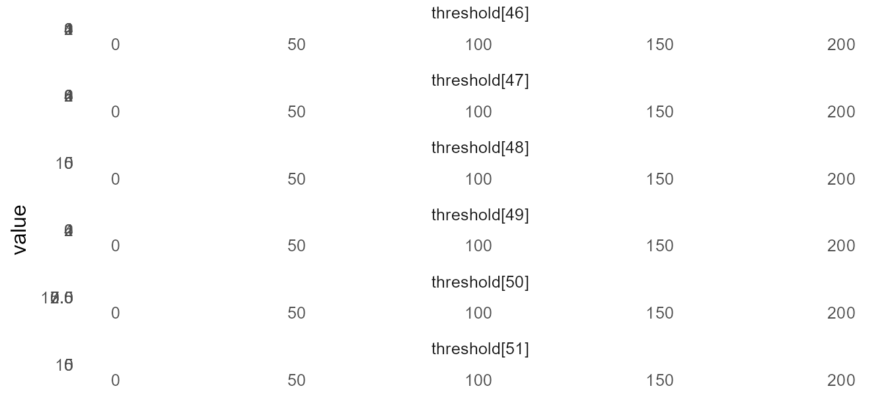
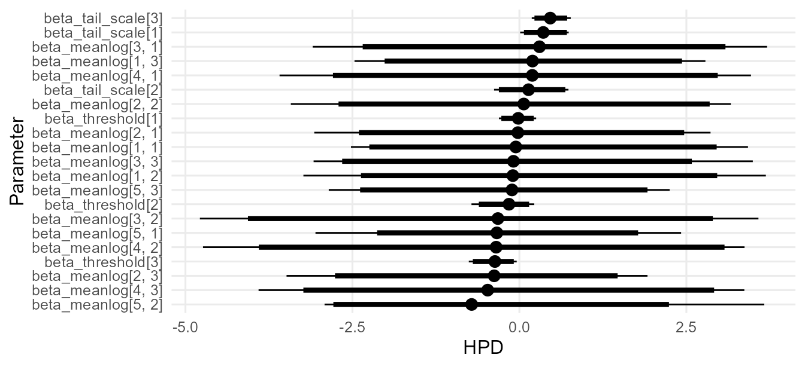
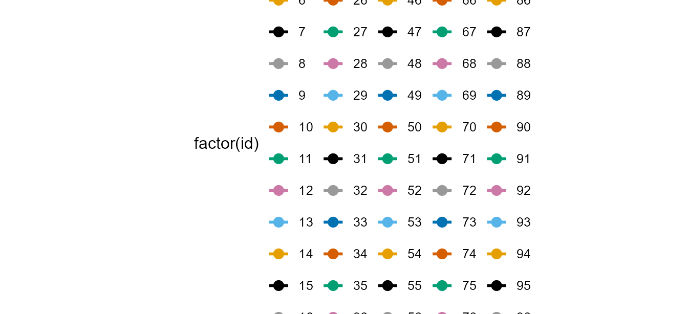
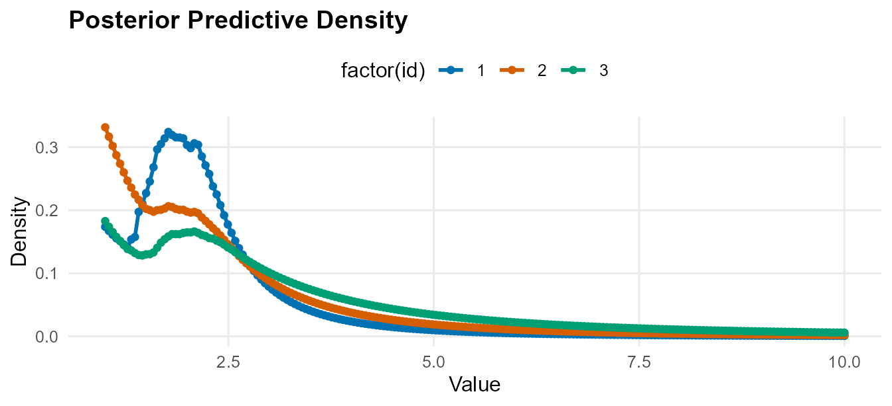
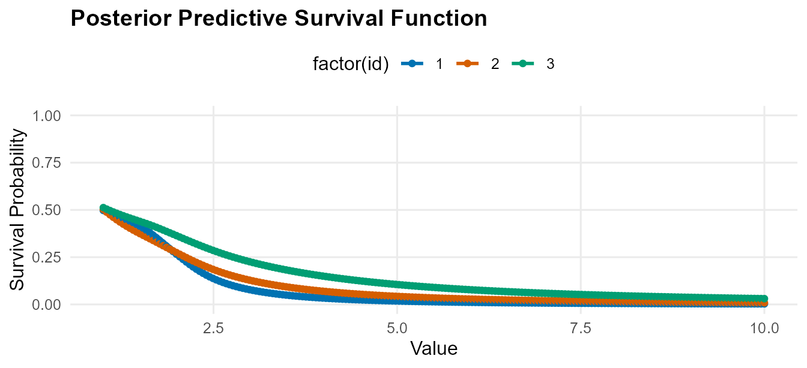
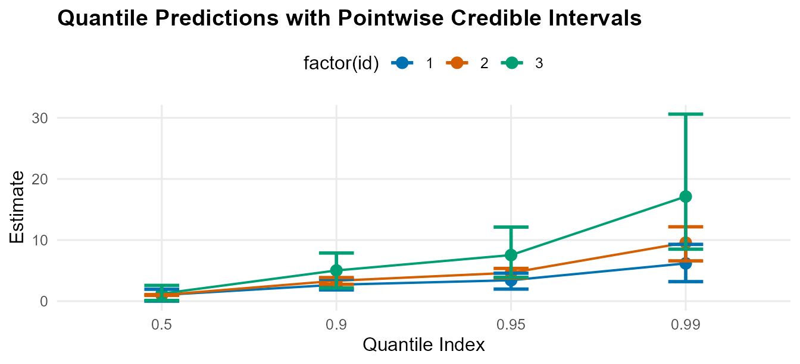

CausalMixGPD: Bayesian Conditional Dirichlet Process Mixtures with Generalized Pareto Tails and Causal Extensions
Arnab Aich, Florida State University
2026-02-19
CausalMixGPD_JSS_article.RmdAbstract
Heavy-tailed outcomes arise in many scientific domains where rare events dominate risk, cost, or policy decisions. Classical parametric models often fit the center of the distribution at the expense of tail misspecification, while purely nonparametric methods typically lack principled extrapolation in regions with sparse data. Extreme value theory (EVT) provides asymptotic justification for generalized Pareto distributions (GPDs) for threshold exceedances, whereas Bayesian nonparametric Dirichlet process mixtures (DPMs) provide flexible modeling for heterogeneous bulk behavior. This article introduces CausalMixGPD, an R package implementing a Bayesian semiparametric framework that combines conditional DPMs for the bulk distribution with covariate-dependent GPD tails for exceedances, with posterior predictive inference for densities, distribution functions, quantiles, survival probabilities, and tail risks. The framework is conditional by construction; unconditional models arise as a special case when covariates are omitted. The package supports both Chinese restaurant process (CRP) and stick-breaking (SB) representations of the Dirichlet process, multiple kernel families for bulk modeling, and an extension to causal inference via treatment-specific conditional distributions that enable inference on distributional and tail-sensitive causal estimands.
Causal inference is often summarized through average effects, but many applications require distributional comparisons between treatment regimes. In clinical trials, investigators may want to understand how a treatment changes outcomes across the outcome scale, including effects among individuals in the upper tail where events are rare but consequences can be substantial. This shift from mean-based to distribution-based causal questions makes causal analysis tightly linked to how well we can estimate (and predict) outcome distributions under competing treatment assignments.
A growing ecosystem supports Bayesian causal inference through flexible outcome modeling and posterior uncertainty quantification. For example, implements Bayesian Causal Forests for binary treatments and continuous outcomes, providing posterior inference for both average and heterogeneous treatment effects . The package builds causal estimators around Bayesian additive regression trees, using BART as a regression engine for treatment-response modeling and causal effect estimation . Complementing tree-based approaches, implements a Bayesian model-averaging strategy for causal effect estimation with support for binary or continuous exposures and outcomes . A recurring practical difficulty in quantile-based causal reporting is quantile crossing issue, i.e., when two quantile curves for different indices cross each other. To avoid that issue this package directly estimates outcome densities and derives quantiles as functionals of the posterior predictive distribution.
Density estimation and conditional density estimation in are well supported by Bayesian nonparametric mixture modeling software based on Dirichlet process (DP) ideas. For example, provides a flexible interface for specifying DP mixture models and fitting them by posterior simulation, yielding posterior inference for mixture weights, component allocations, and predictive densities under user-chosen kernels . The package offers a broad suite of Bayesian semi- and nonparametric models in , including DP-based formulations for marginal and conditional densities, regression functions, and model-based predictive distributions . More recently, emphasizes practical Bayesian nonparametric mixture approaches, providing posterior inference for clustering structure and density/regression estimation under DP and Pitman–Yor-type mixture specifications . However, DP mixture models are suitable for modeling the bulk of the distribution but do not explicitly model tail behavior, which can lead to poor estimation and prediction in the tails when data are sparse or a heavy tail is present.
Bayesian implementations of Extreme Value Theory (EVT) is available in when posterior uncertainty quantification for tail quantitites are required. For example, provides Bayesian inference for standard extreme-value models via posterior simulation, enabling posterior and posterior-predictive summaries for extreme-event quantities . For peaks-over-threshold (POT) approaches, the package implements a focused collection of tools for GPD modeling and threshold-based tail analysis . Finally, for extreme quantile estimation and rare-event tail summaries, provides a published software implementation targeted specifically at extreme-quantile estimation .
This article introduces , an package that connects Bayesian nonparametric bulk modeling with extreme-value tail modeling, while also supporting robust causal analyses. The package provides two complementary capabilities:Taken together, offers a coherent workflow for density estimation, prediction, and distributional causal reporting when tail behavior is scientifically central. % According to a document from 2026, and the accompanying CausalMixGPD article draft, this section summarizes the core preliminaries.
This chapter treats conditional outcome distributions as the fundamental inferential object. All summaries reported later are functionals of estimated conditional distributions, including conditional quantiles, tail probabilities, and distributional causal contrasts.
Let the outcome–covariate pair be defined by For a fixed covariate value , the conditional cumulative distribution function (CDF) and density are and the conditional quantile function is defined by
We model the bulk conditional density of given using a Dirichlet process mixture (DPM) regression. Let be a user-chosen kernel family indexed by parameter . The hierarchical specification is where is an unknown mixing distribution on the kernel-parameter space, is a base measure, and is a concentration parameter .
Marginalizing yields an (almost surely) discrete mixing distribution and an infinite mixture representation:
A constructive representation for the weights is given by Sethuraman’s stick-breaking construction : An alternative marginal representation is obtained by integrating out , which induces the Blackwell–MacQueen P'olya urn predictive scheme (often described via the Chinese restaurant process) : Both stick-breaking (blocked/truncated) and allocation-based representations are widely used for posterior simulation in DPM models .
Extreme value theory provides a canonical approximation for exceedances above a high threshold. Let be a (possibly covariate-dependent) high threshold and define the exceedance considered conditionally on the event . The conditional excess distribution function is Under broad regularity conditions, is well-approximated by a generalized Pareto distribution (GPD) for sufficiently large .
With scale parameter and shape parameter , the tail CDF for is with support when , and when . The corresponding density is The associated GPD quantile function is

Dirichlet process mixture (DPM) regression models provide a highly flexible representation of the of the conditional distribution , accommodating multimodality, skewness, and heterogeneous dispersion through mixture components. However, in the far upper tail—where data are intrinsically sparse—pure mixture-based extrapolation can be unstable and may not reflect the regular variation behavior typically assumed in extreme value theory (EVT). Conversely, EVT provides an asymptotically justified parametric description of threshold exceedances via the generalized Pareto distribution (GPD), but it is not intended to model the full distribution. We therefore adopt a (bulk–tail) construction that retains the DPM fit below a high threshold and replaces the upper tail by a GPD component .
To make the splicing and downstream functionals explicit, we collect the unknown bulk regression parameters into and the tail parameters into . Specifically, the bulk model in can be written as where denotes component-specific regression/shape coefficients and denotes the kernel parameter vector induced at covariate value through the corresponding coefficients in . Mixture weights are generated by the DP backend (SB or CRP representation) and are suppressed in this compact notation.
For the tail block, let where and are induced by covariates and tail-regression coefficients, and is the tail shape parameter. Thus, and are global parameter collections, while enters through these mappings. The package allows users to control which kernel and tail parameters vary with covariates (e.g., via link-based regression for selected parameters) and which are treated as fixed or purely a priori parameters (Section~).
Let denote the bulk probability mass below the threshold under the DPM fit. The spliced conditional CDF is where is the GPD CDF on the exceedance region (Section~). The construction is continuous at and yields a proper distribution: the bulk contributes mass and the tail contributes the remaining mass .
Differentiating yields the spliced density so the tail density is a GPD density, with scaling ensuring normalization of .
For , the conditional survival function decomposes as Quantiles follow by inversion of . For , where the tail-rescaled probability level is and is given in . Thus, upper quantiles are determined jointly by the bulk exceedance probability and the conditional exceedance distribution governed by .

This spliced conditional distribution is the central predictive object used throughout the package. In the causal extension (Section~), the same construction is applied separately to treatment-specific conditional distributions , enabling causal contrasts based on densities, quantiles, and tail risks rather than only mean-scale effects.
We use the potential outcomes framework . Let denote a binary treatment indicator, let denote observed pre-treatment covariates, and let denote the observed outcome. Each unit has two potential outcomes, and , and the observed outcome satisfies
The treatment-specific conditional distribution functions are the fundamental inferential objects: In this package, the corresponding conditional densities are where assumes the spliced DPM structure in~. Conditional quantiles are defined by inversion of the conditional CDF: Conditional means are functionals of the conditional density:
Marginal (standardized) distributions are obtained by averaging conditional distributions over a covariate distribution. The package reports population-standardized and treated-standardized functionals: The corresponding marginal quantiles are Marginal means are
Identification of these quantities depends on the study design. In randomized experiments, randomization together with positivity implies exchangeability between treatment assignment and potential outcomes . In observational studies, we rely on the following conditions :Under these conditions, the treatment-specific conditional distributions are identified from the observed data:
In observational settings, we use the propensity score (PS) to support the design stage . The PS is the treatment assignment probability given covariates: A key property of the true propensity score is that conditioning on it balances covariates across treatment groups: With estimated scores this balancing property is approximate in finite samples. Following the two-stage strategy described in the thesis, we first estimate using only and then augment the outcome model covariates with the estimated score : The conditional outcome distributions are then modeled separately within each treatment arm as functions of the augmented predictor , and causal contrasts are computed as functionals of the estimated treatment-specific distributions.
The package reports the following causal estimands:This section established the main probabilistic and causal building blocks used in the remainder of the work. We first defined conditional distributional targets and introduced a Dirichlet process mixture model to flexibly estimate bulk conditional outcome densities. We then reviewed generalized Pareto modeling for threshold exceedances and constructed a spliced DPM–GPD conditional distribution that preserves the estimated bulk while enabling principled tail extrapolation. Finally, we introduced the potential outcomes framework and the treatment-effect estimands reported in the package, showing how marginal and conditional effects can be obtained as functionals of treatment-specific conditional distributions (with propensity-score augmentation supporting confounding adjustment in observational studies). Subsequent chapters build on these preliminaries to specify the full hierarchical model, posterior computation, and empirical evaluation of tail-aware distributional causal effects.
This section describes the main workflow provided by for one-arm conditional modeling and prediction when a generalized Pareto tail is spliced above a covariate-dependent threshold. The causal extension reuses the same modeling, estimation, and prediction machinery after introducing treatment-specific outcome models and a propensity score component; we defer those additions to the causal section.
Let the observed data be
# Reload package example data and build a modeling data frame
data("nc_posX100_p3_k2", package = "CausalMixGPD")
dat <- data.frame(y = nc_posX100_p3_k2$y, nc_posX100_p3_k2$X)with denoting the covariate vector (including an intercept if desired). The target conditional distribution and its spliced DPM–GPD construction are defined in Section~, with the spliced CDF and density given in –. Posterior computation in approximates the bulk DPM by a finite truncation with mixture components, where indexes mixture components, , and . Kernel parameters can be constant or covariate-dependent through link specifications of the form where enforces parameter support (e.g., positive scale parameters).
fit <- dpmgpd(
formula = y ~ x1 + x2 + x3,
data = dat,
backend = "sb",
kernel = "lognormal",
components = 5,
mcmc = mcmc_fixed
)For the spliced model, let be the threshold, the tail scale, and the tail shape (as in Section~). Define . Using the spliced density with the truncated bulk mixture, the likelihood is where collects the truncation-level bulk parameters , and collects the tail parameters governing , , and . Equivalently, the log-likelihood can be written as where is given in and is the bulk mixture CDF induced by the truncated mixture.
Priors follow the decomposition implied by and . Under the stick-breaking (SB) backend, the truncation-level weights are generated through Beta stick breaks (Section~, ), which are represented in using the Beta distribution in model code (see ). Under the Chinese restaurant process (CRP) backend, the allocation-based representation is implemented using the CRP distribution in (see ), matching the predictive representation in . Kernel parameters and tail parameters are assigned weakly informative priors, with regression coefficients arising through the link representation . The same link construction is used for covariate-dependent and when those are modeled as functions of .
Posterior simulation targets using the likelihood and the prior structure implied by the SB or CRP representation (Section~, –). Given a model specification, runs MCMC through under the chosen backend; SB uses Beta stick breaks in model code (see ) and CRP uses the CRP distribution for allocations (see ). Users control the number of iterations, burn-in, thinning, and number of chains through the argument in the wrappers.
Convergence checking is supported through standard multi-chain diagnostics and trace-based visualizations. The model object supports for posterior summaries, for diagnostic plots (trace, running mean, autocorrelation, and multi-chain diagnostics such as when multiple chains are used), and as a lightweight extractor returning posterior mean parameters reshaped to natural dimensions. Interval summaries used by can be chosen as equal-tailed credible intervals or HPD intervals as described in Section~ . Diagnostic plotting relies on established MCMC diagnostic tooling .
# Posterior summaries
summary(fit)MixGPD summary | backend: Stick-Breaking Process | kernel: Lognormal Distribution | GPD tail: TRUE | epsilon: 0.025
n = 100 | components = 5
Summary
Initial components: 5 | Components after truncation: 3
WAIC: 533.418
lppd: -190.186 | pWAIC: 76.523
Summary table
parameter mean sd q0.025 q0.500 q0.975 ess
weights[1] 0.46 0.117 0.27 0.45 0.72 11.627
weights[2] 0.254 0.061 0.12 0.255 0.36 39.269
weights[3] 0.165 0.05 0.08 0.16 0.26 38.227
alpha 1.86 0.968 0.487 1.698 4.099 12.727
beta_meanlog[1, 1] 0.183 1.477 -2.521 -0.054 3.423 20.74
beta_meanlog[2, 1] -0.009 1.399 -3.071 -0.023 2.862 33.912
beta_meanlog[3, 1] 0.387 1.74 -3.095 0.301 3.709 43.663
beta_meanlog[4, 1] 0.197 1.78 -3.591 0.193 3.467 54.846
beta_meanlog[5, 1] -0.334 1.201 -3.053 -0.338 2.421 27.182
beta_meanlog[1, 2] 0.047 1.695 -3.234 -0.097 3.69 56.754
beta_meanlog[2, 2] 0.028 1.595 -3.422 0.066 3.166 51.988
beta_meanlog[3, 2] -0.393 2.104 -4.784 -0.322 3.579 25.438
beta_meanlog[4, 2] -0.348 2.033 -4.737 -0.348 3.371 44.29
beta_meanlog[5, 2] -0.492 1.505 -2.917 -0.715 3.667 48.203
beta_meanlog[1, 3] 0.234 1.263 -2.468 0.197 2.785 42.38
beta_meanlog[2, 3] -0.474 1.227 -3.486 -0.377 1.918 25.851
beta_meanlog[3, 3] 0.092 1.584 -3.081 -0.089 3.495 18.206
beta_meanlog[4, 3] -0.29 1.817 -3.905 -0.475 3.368 60.839
beta_meanlog[5, 3] -0.094 1.216 -2.854 -0.111 2.25 59.107
beta_tail_scale[1] 0.377 0.204 0.012 0.357 0.738 30.053
beta_tail_scale[2] 0.162 0.302 -0.379 0.137 0.734 51.036
beta_tail_scale[3] 0.458 0.153 0.185 0.462 0.769 72.09
beta_threshold[1] -0.023 0.147 -0.306 -0.017 0.251 26.686
beta_threshold[2] -0.178 0.234 -0.717 -0.156 0.222 10.31
beta_threshold[3] -0.372 0.184 -0.757 -0.366 -0.04 13.39
sdlog_u 0.869 0.185 0.489 0.863 1.257 9.34
tail_shape 0.393 0.095 0.209 0.406 0.583 49.001
sdlog[1] 1.464 0.785 0.351 1.33 3.499 36.647
sdlog[2] 2.05 1.297 0.423 1.587 5.209 35.647
sdlog[3] 2.041 1.248 0.48 1.791 5.04 101.774
# Extract posterior mean parameters in natural shapes
params(fit)Posterior mean parameters
$alpha
[1] 1.86
$w
[1] 0.46 0.254 0.165
$beta_meanlog
x1 x2 x3
comp1 0.183 0.047 0.234
comp2 -0.009 0.028 -0.474
comp3 0.387 -0.393 0.092
comp4 0.197 -0.348 -0.29
comp5 -0.334 -0.492 -0.094
$sdlog
[1] 1.464 2.05 2.041
$beta_threshold
[1] -0.023 -0.178 -0.372
$sdlog_u
[1] 0.869
$beta_tail_scale
[1] 0.377 0.162 0.458
$tail_shape
[1] 0.393
# MCMC diagnostics: trace, running mean, autocorrelation, and multi-chain diagnostics
plot(fit, family = "traceplot", param = "threshold")
[1m
[22mScale for
[32mcolour
[39m is already present.
Adding another scale for
[32mcolour
[39m, which will replace the existing
scale.
=== traceplot ===
plot(fit, family = "caterpillar", param = "beta")Warning:
[1m
[22mUsing `size` aesthetic for lines was deprecated in ggplot2 3.4.0.
[36mℹ
[39m Please use `linewidth` instead.
[36mℹ
[39m The deprecated feature was likely used in the
[34mggmcmc
[39m package.
Please report the issue at
[3m
[34m<https://github.com/xfim/ggmcmc/issues/>
[39m
[23m.
[90mThis warning is displayed once per session.
[39m
[90mCall `lifecycle::last_lifecycle_warnings()` to see where this warning
[39m
[90mwas generated.
[39m
=== caterpillar ===
Setting removes the splicing step so that , and reduces to the bulk-mixture likelihood in . All estimation and prediction targets described below remain available, with tail-specific terms omitted. The wrapper fits this bulk-only model, while fits the augmented (spliced) model.
The estimands reported by are functionals of the estimated conditional distribution from Section~. In this article we focus on four conditional functionals: density , survival , quantiles , and mean-type summaries.
Let denote post-burn-in draws from the posterior. For density, survival, and quantiles, evaluates the corresponding draw-wise functional using the spliced formulas – (with the truncated bulk mixture), and then summarizes across draws. Specifically, for a generic scalar functional (e.g., or ), and uncertainty is summarized either by equal-tailed credible intervals (posterior quantiles) or by highest posterior density (HPD) intervals (shortest intervals covering the target posterior mass). Equal-tailed intervals and general Bayesian posterior summaries follow standard practice ; HPD intervals are computed from the MCMC draws using established implementations .
Mean-type summaries are handled differently in the package. For and , uses posterior predictive Monte Carlo within each posterior draw rather than direct plug-in evaluation. For a fixed covariate value , within draw the package generates and computes corresponding to the conditional mean and the restricted mean at cutoff , respectively. Posterior summaries and intervals are then formed from or . Under the spliced model, the conditional mean is infinite when ; accordingly, flags as infinite when there is posterior mass with , while remains finite by construction.
Using the same fitted model from Section~, we now compute posterior summaries on the original training covariates (default behavior of when is not supplied).
# Posterior functionals from the same fitted model and data set
q_grid <- c(0.25, 0.50, 0.75)
est_quant <- predict(fit, type = "quantile", index = q_grid,
interval = "hpd", level = 0.95)
plot(est_quant)
For a new covariate value , prediction is based on the posterior predictive distribution The method returns posterior summaries for the same functional targets as in Section~. For and , the user supplies a grid of values and the method returns pointwise posterior means with interval bounds computed draw-by-draw. For , the user supplies quantile indices and the method returns posterior summaries of computed using the spliced quantile representation in . For and , prediction uses posterior predictive Monte Carlo as described above, with replaced by and with user-controlled through .
# New profiles from coordinate-wise quartiles (25%, 50%, 75%) of covariates
q_levels <- c(0.25, 0.50, 0.75)
x_new <- as.data.frame(lapply(
dat[, c("x1", "x2", "x3")],
quantile,
probs = q_levels,
na.rm = TRUE
))
rownames(x_new) <- c("q25", "q50", "q75")
# Density / survival on a y-grid'
y_grid <- seq(1, 10, length.out = 200)
pdens <- predict(fit, newdata = x_new, y = y_grid, type = "density",
interval = "credible", level = 0.95)
head(as.data.frame(pdens$fit), 5) id y density lower upper
1 1 1.000000 0.1737123 0.02990607 0.3616488
2 1 1.045226 0.1672169 0.03025095 0.3525184
3 1 1.090452 0.1611403 0.03086577 0.3371248
4 1 1.135678 0.1554363 0.03165092 0.3206042
5 1 1.180905 0.1510845 0.03046477 0.3092109
plot(pdens)
# Survival function on the same y-grid
psurv <- predict(fit, newdata = x_new, y = y_grid, type = "survival",
interval = "credible", level = 0.95)
head(as.data.frame(psurv$fit), 5) id y survival lower upper
1 1 1.000000 0.4972511 0.1784838 0.8072759
2 1 1.045226 0.4895434 0.1755278 0.8016826
3 1 1.090452 0.4821197 0.1727356 0.7926217
4 1 1.135678 0.4749622 0.1700882 0.7875261
5 1 1.180905 0.4680470 0.1675699 0.7835322
plot(psurv)
# Quantiles at selected indices
p_grid <- c(0.50, 0.90, 0.95, 0.99)
pquant <- predict(fit, newdata = x_new, type = "quantile", index = p_grid,
interval = "hpd", level = 0.95)
head(as.data.frame(pquant$fit), 5) id index estimate lower upper
1 1 0.50 1.009702 0.007511686 1.949263
2 1 0.90 2.696279 1.846158152 3.588812
3 1 0.95 3.428332 1.979865536 4.579482
4 1 0.99 6.183331 3.200827399 9.297415
5 2 0.50 1.008598 0.949744433 1.076012
plot(pquant)
This package extends the one-arm conditional mixture regression framework to two-arm causal studies by fitting an outcome model under treatment and under control, optionally augmenting the outcome covariates with a propensity score (PS) summary. Throughout this section we write the model in its default form (bulk mixture + GPD tail), using the same conditional distributional building blocks introduced earlier (so we do not restate the spliced density; see and the corresponding conditional functionals defined in the previous sections).
Let where denotes treatment and denotes control. The causal interface consists of two pieces.
First, when PS augmentation is enabled, a binary regression model is used for the treatment mechanism which is consistent with the definition and balancing property in –. The package also supports a option, in which is taken to be constant (no covariate dependence).
Second, the outcome model is fit separately within each arm. Denote by the fitted conditional outcome distribution under arm , where is the covariate vector used by the outcome model. With PS augmentation, the package constructs an covariate vector where is a posterior summary of the PS (posterior mean or median, controlled by ), and is either or (controlled by ). When PS augmentation is disabled, .
Within each arm, the conditional density follows the same mixture regression + optional GPD tail specification described in the one-arm section (kernel choice, link structure for covariate-dependent parameters, and either or backend for the DP mixture). Let collect the arm-specific mixture and tail parameters. The arm-wise likelihood contributions are with given by the spliced construction already defined (bulk mixture below threshold and GPD exceedances above threshold). Practically, the implementation uses a two-stage workflow: (i) fit the PS model using –, then (ii) compute and build in before fitting the two arm-specific outcome models.
For the PS regression coefficients, the default prior is independent Normal, with defaults controlled by .
For each arm’s outcome model, priors follow the same structure as the one-arm case: a DP mixture prior (with either truncated stick-breaking or CRP allocation, implemented in ) and kernel-/tail-specific priors on the bulk and GPD parameters. Since the causal fit is simply a pair of one-arm fits (treated and control), all customization options for kernels, links, and tail inclusion apply arm-wise.
The causal fit runs MCMC in two stages, each with its own iteration controls.
PS stage: posterior simulation for in – using settings. The PS posterior draws are summarized to obtain , which is optionally transformed via and appended to the outcome covariates as in .
Outcome stage: arm-specific posterior simulation for and using settings, with either or backend.
For routine convergence checks, users can inspect trace plots and autocorrelation for monitored parameters and (when running multiple chains) compare between-chain and within-chain mixing. The package stores MCMC samples in the fitted object, and standard diagnostics can be applied after converting samples to objects (e.g., effective sample size, Geweke diagnostics, and HPD intervals via ; see the reference at the end of this message). Posterior parameter summaries can be extracted via the exported method, which returns arm-specific parameter tables for causal fits.
All reported causal quantities are computed as functionals of the fitted arm-specific conditional distributions. Let denote any conditional functional under arm (density, survival, quantile, or mean/restricted mean), computed from using the same definitions as in the one-arm case. The corresponding conditional causal contrast is The package computes from posterior samples, then summarizes by a posterior mean/median and uncertainty intervals. Equal-tailed credible intervals are formed by posterior quantiles, while HPD intervals are computed using .
The main causal estimators provided by the package are:
Conditional effects at covariate profiles. For a user-supplied set of covariate rows , where and is the conditional quantile function. In heavy-tailed settings, can be unstable when the implied tail shape yields infinite mean; the package therefore supports both and for (restricted) mean-based effects, with restricted means computed as at user-specified cutoff .
Marginal (standardized) summaries. The package reports marginal ATE and marginal QTE-style summaries by empirical standardization over covariate profiles: Treated-standardized analogues (ATT, QTT) are obtained by replacing the full-sample covariate empirical distribution with the treated-subsample empirical distribution . In the current implementation, and aggregate draw-wise conditional mean contrasts across rows, while and compute draw-wise arm-specific marginal quantiles and then contrast them.
Prediction in the causal setup proceeds by producing arm-specific predictive summaries at new covariates and then differencing when required. For new covariates , the package first predicts the PS (if enabled), forms via , and then evaluates the desired distributional functional under both arms. For and , returns treated-minus-control summaries and stores arm-specific predictions as attributes; for , , and , it returns arm-specific summaries directly.
A recommended way to build an interpretable prediction grid is to use coordinate-wise empirical quartiles. Let be the th sample quantile of covariate for . The grid yields representative covariate profiles at which , , survival contrasts, and other predictive contrasts can be reported.
The following example uses the formula interface and the high-level wrapper, fitting the augmented spliced model by default.
# Load causal data
data("causal_pos500_p3_k2", package = "CausalMixGPD")
dat <- causal_pos500_p3_k2
df <- data.frame(y = dat$y, A = dat$A, dat$X)
cfit <- dpmgpd(
formula = y ~ x1 + x2 + x3,
data = df,
treat = df$A,
backend = "sb",
kernel = "lognormal",
components = 5,
PS = "logit",
ps_scale = "logit",
ps_summary = "mean",
mcmc_outcome = mcmc_fixed,
mcmc_ps = mcmc_fixed
)
ate_hat <- ate(cfit, level = 0.90, interval = "credible")
ate_hatATE (Average Treatment Effect)
Prediction points: 1
Conditional (covariates): NO
Propensity score used: NO
Posterior mean draws: 200
Credible interval: credible (90%)
ATE estimates (treated - control):
id estimate lower upper
1 -65.253 -272.621 1.549
qte_hatQTE (Quantile Treatment Effect)
Prediction points: 1
Quantile grid: 0.5, 0.9, 0.95
Conditional (covariates): NO
Propensity score used: NO
Credible interval: hpd
QTE estimates (treated - control):
id index estimate lower upper
1 0.5 -0.858 -1.154 -0.566
1 0.9 -0.349 -2.487 1.478
1 0.95 -3.672 -12.67 2.357
# Ensure data frame is available when model fit is loaded from cache
if (!exists("df") || !is.data.frame(df)) {
data("causal_pos500_p3_k2", package = "CausalMixGPD")
dat <- causal_pos500_p3_k2
df <- data.frame(y = dat$y, A = dat$A, dat$X)
}
# Prediction on a coordinate-wise quartile grid
qs <- c(0.25, 0.50, 0.75)
Xgrid <- expand.grid(lapply(df[c("x1","x2","x3")], quantile, probs = qs))
pred_q <- predict(cfit, newdata = Xgrid, type = "quantile", index = c(0.50, 0.90))
plot(pred_q)
pred_s <- predict(cfit, newdata = Xgrid, type = "survival", y = sample(df$y, nrow(Xgrid)) + 1,
interval = "credible", level = 0.90)
plot(pred_s)To run the same two-arm regression without a GPD tail, use the bulk-only wrapper (or set at bundle construction). All causal estimand and prediction functions (, , , , and ) operate the same way, now interpreting as the bulk mixture distribution.
This application demonstrates model-based clustering from a Dirichlet process (DP) mixture regression, using the Chinese restaurant process (CRP) backend and the bulk-only likelihood (no GPD tail). Clusters are inferred from posterior draws of the latent membership indicators and summarized using a posterior similarity matrix (PSM), which is invariant to label switching.
We use the housing data (), treating each census tract as an observational unit. Let where is the per-capita crime rate for tract and is a vector of tract characteristics. The goal is twofold: (i) flexibly model the conditional distribution of a positive, right-skewed outcome and (ii) identify latent groups of tracts with distinct regression patterns.
We fit a DP mixture of lognormal regressions. Conditional on a latent membership , the outcome follows the bulk kernel introduced earlier: where are component-specific regression coefficients and is the component-specific log-scale standard deviation. The DP prior induces a random partition through the CRP representation, with controlling the expected number of occupied clusters. In , the CRP backend represents up to clusters in a finite NIMBLE model; the realized number of occupied clusters is then monitored and checked against this upper bound.
Posterior simulation is carried out by MCMC. We run two chains and assess convergence using standard diagnostics (trace plots, autocorrelation, effective sample sizes, and when applicable), along with a mixture-specific diagnostic: the posterior distribution of the number of occupied clusters.
A key practical point for this analysis is that we explicitly request link-mode for so the CRP model is a rather than a purely unconditional mixture. This is done via in the wrapper call below.
library(MASS)
data("Boston", package = "MASS")
dat <- Boston
stopifnot(all(dat$crim > 0))
# High-level summaries
summary(fit_clust)MixGPD summary | backend: Chinese Restaurant Process | kernel: Lognormal Distribution | GPD tail: FALSE | epsilon: 0.025
n = 506 | components = 3
Summary
Initial components: 3 | Components after truncation: 2
WAIC: 779.665
lppd: -259.673 | pWAIC: 130.16
Summary table
parameter mean sd q0.025 q0.500 q0.975 ess
weights[1] 0.565 0.084 0.381 0.585 0.684 11.394
weights[2] 0.286 0.039 0.203 0.294 0.348 16.833
alpha 0.411 0.239 0.077 0.362 0.974 400
meanlog[1] -2.205 0.296 -2.667 -2.245 -1.383 10.751
meanlog[2] 1.556 1.15 -2.635 1.993 2.289 29.365
sdlog[1] 0.98 0.231 0.622 0.95 1.496 21.156
sdlog[2] 1.229 0.416 0.311 1.274 2.014 62.58Clustering is driven by posterior draws of the membership vector . We summarize uncertainty in the partition using the posterior similarity matrix where are post-burn-in draws. Because is invariant to label switching, it provides a stable basis for cluster visualization (heatmaps) and for selecting a representative hard partition.
In practice, we (i) compute from the stored MCMC draws, (ii) select a representative partition from the posterior sample using a least-squares rule against the PSM, and (iii) interpret clusters by comparing outcome and covariate profiles across the resulting groups.
cluster_psm <- cache_or_run(
file.path(derived_cache_dir, "cluster_psm.rds"),
{
smp <- fit_clust$mcmc$samples
if (is.null(smp) && !is.null(fit_clust$samples)) smp <- fit_clust$samples
zmat_list <- vector("list", 0)
for (i in seq_along(smp)) {
M <- as.matrix(smp[[i]])
z_cols <- grep("^z\\[[0-9]+\\]$", colnames(M))
if (length(z_cols) > 0) {
# Sort z columns numerically by extracting the index i in z[i]
z_colnames <- colnames(M)[z_cols]
z_indices <- as.integer(sub("^z\\[([0-9]+)\\]$", "\\1", z_colnames))
z_cols <- z_cols[order(z_indices)]
zmat_list[[length(zmat_list) + 1]] <- M[, z_cols, drop = FALSE]
}
}
if (length(zmat_list) > 0) {
zmat <- do.call(rbind, zmat_list)
n_occupied <- apply(zmat, 1, function(z) length(unique(as.integer(z))))
# Diagnostic: check if n_occupied piles up at upper bound (K)
K_max <- max(n_occupied)
n_at_max <- sum(n_occupied == K_max)
prop_at_max <- n_at_max / length(n_occupied)
if (prop_at_max > 0.1) {
message(sprintf(
"Warning: %.1f%% of iterations hit K=%d components. Consider increasing K.",
100 * prop_at_max, K_max
))
}
set.seed(1)
S_keep <- min(400, nrow(zmat))
keep <- sample(seq_len(nrow(zmat)), S_keep)
Zk <- zmat[keep, , drop = FALSE]
n <- ncol(Zk)
PSM <- matrix(0, n, n)
for (s in seq_len(nrow(Zk))) {
z <- as.integer(Zk[s, ])
PSM <- PSM + (outer(z, z, "==") * 1.0)
}
PSM <- PSM / nrow(Zk)
ssq <- numeric(nrow(Zk))
for (s in seq_len(nrow(Zk))) {
z <- as.integer(Zk[s, ])
A <- outer(z, z, "==") * 1.0
ssq[s] <- sum((A - PSM)^2)
}
s_star <- which.min(ssq)
z_hat <- as.integer(Zk[s_star, ])
if (length(z_hat) == nrow(dat)) {
cluster <- match(z_hat, unique(z_hat))
} else {
cluster <- rep(1L, nrow(dat))
}
} else {
n_occupied <- numeric(0)
cluster <- rep(1L, nrow(dat))
}
list(cluster = cluster, n_occupied = n_occupied)
}
)
if (is.null(cluster_psm)) {
dat$cluster <- factor(rep(1L, nrow(dat)))
} else {
dat$cluster <- factor(cluster_psm$cluster)
if (length(cluster_psm$n_occupied) > 0) {
summary(cluster_psm$n_occupied)
max(cluster_psm$n_occupied)
}
}
table(dat$cluster)
1
506 Given the representative clustering, we compare outcome and covariate profiles across clusters. Because the fitted model is a mixture regression, clusters reflect differences in both the typical outcome level and the component-specific regression behavior.
# Outcome summaries by cluster
cluster_outcome <- cache_or_run(
file.path(derived_cache_dir, "cluster_outcome.rds"),
{
out <- aggregate(
crim ~ cluster, data = dat,
FUN = function(v) c(median = median(v), q25 = quantile(v, 0.25), q75 = quantile(v, 0.75))
)
do.call(data.frame, out)
}
)
cluster_outcomeNULL
# Covariate means by cluster (illustrative subset)
cluster_covars <- cache_or_run(
file.path(derived_cache_dir, "cluster_covars.rds"),
aggregate(
cbind(rm, lstat, nox, ptratio, tax, rad) ~ cluster,
data = dat,
FUN = mean
)
)
cluster_covarsNULL
# Fitted conditional summaries at observed X (posterior intervals supported)
fit_med <- cache_or_run(
file.path(derived_cache_dir, "cluster_fit_med.rds"),
fitted(fit_clust, type = "quantile", p = 0.50, level = 0.95, interval = "credible")
)
fit_hi <- cache_or_run(
file.path(derived_cache_dir, "cluster_fit_hi.rds"),
fitted(fit_clust, type = "quantile", p = 0.90, level = 0.95, interval = "credible")
)
# Print small previews to avoid LaTeX dimension errors
print("fit_med (first 5 rows)")[1] "fit_med (first 5 rows)"[1] "fit_hi (first 5 rows)"
if (!is.null(fit_hi)) print(head(fit_hi$fit, 5))
# Attach fitted summaries for downstream plots
if (!is.null(fit_med)) dat$fit_q50 <- fit_med$fit
if (!is.null(fit_hi)) dat$fit_q90 <- fit_hi$fitFor prediction at new covariate profiles, we use the same interface as in the methods section. In this clustering application, prediction is mainly used to visualize how fitted conditional quantiles vary across covariate patterns and to compare those patterns across the inferred clusters.
# Coordinate-wise quartile grid for continuous covariates; fix binary indicator chas
qs <- c(0.25, 0.50, 0.75)
Xgrid <- expand.grid(
lstat = quantile(dat$lstat, qs),
rm = quantile(dat$rm, qs),
nox = quantile(dat$nox, qs),
ptratio = quantile(dat$ptratio, qs),
tax = quantile(dat$tax, qs),
rad = quantile(dat$rad, qs)
)
Xgrid$chas <- 0
pred_q <- cache_or_run(
file.path(derived_cache_dir, "cluster_pred_q.rds"),
predict(
fit_clust,
newdata = Xgrid,
type = "quantile",
index = c(0.50, 0.90, 0.95),
level = 0.95,
interval = "credible"
)
)
if (!is.null(pred_q)) pred_q